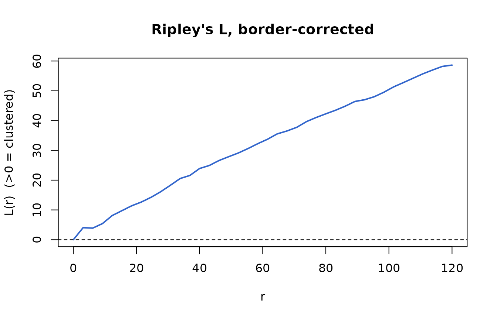
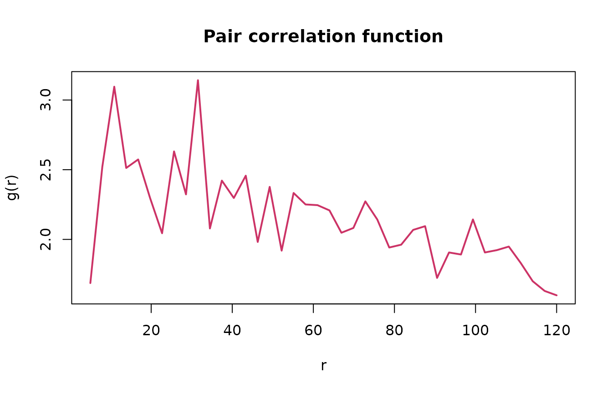
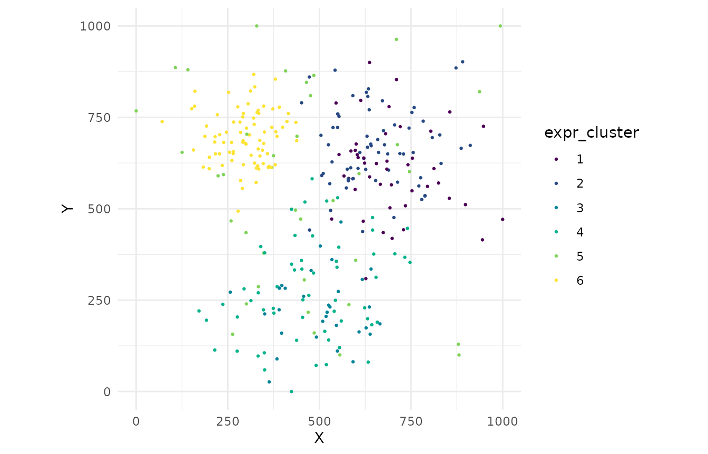

Advanced Spatial Analysis
Source:vignettes/phenoscapR-03-spatial-analysis.Rmd
phenoscapR-03-spatial-analysis.Rmd


Overview
Beyond nearest neighbours and density, phenoscapR provides a suite of point- pattern statistics for asking how cells are spatially organised:
- Neighbourhood enrichment — do phenotype pairs co-localise more than chance?
- Ripley’s K / L — clustering or dispersion across many scales at once
- Pair correlation function — clustering at a specific distance
- Moran’s I — spatial autocorrelation of a continuous marker
- Quadrat analysis — a quick chi-squared test of spatial randomness
- Cross nearest-neighbour distance — directed proximity between two phenotypes
- Delaunay network — the cell-contact graph
- Expression clustering — marker-defined communities, ignoring position
One sample at a time
These statistics describe a single point pattern in one observation
window. Pooling several tissues would compute distances across samples
and return nonsense, so phenoscapR refuses multi-sample
objects for these functions — subset to one sample first.
(Per-cell summaries like FindNeighbours(),
CellDensity(), and InteractionMatrix() are
sample-aware and need no subsetting.)
library(phenoscapR)
data(phenoscapR_example)
spe <- phenoscapR_example
spe@meta_data$phenotype <- spe@meta_data$phenotype_true
# A single tissue section.
a <- spe[spe$sample_id == "tonsil_A", ]
a
#> A SpatialCellData object
#> 320 cells across 1 sample
#> Markers: CD3, CD4, CD8, CD20, CD68, ... (8 total)
#> Normalised: FALSE
#> Phenotypes: 6
#> Project: phenoscapR example (tonsil, simulated)Neighbourhood enrichment
A permutation test: it shuffles phenotype labels many times and asks whether each phenotype pair is observed as neighbours more (positive z) or less (negative z) often than the shuffles. The planted B-cell follicle shows up as strong B–B self-enrichment.
ne <- NeighbourhoodEnrichment(a, radius = 40, n_perm = 199, seed = 1)
ne[order(-ne$z_score), ][1:6, ]
#> <phenoscapR> Neighbourhood enrichment (permutation test)
#> top co-localised pairs (by z-score):
#> from to z_score p_value
#> B cell B cell 24.996390 6.691699e-138
#> T reg T helper 9.851029 6.784551e-23
#> T helper T reg 9.851029 6.784551e-23
#> T helper T cytotoxic 8.315542 9.133401e-17
#> T cytotoxic T helper 8.315542 9.133401e-17Ripley’s K and L
RipleysK() accumulates, for each radius r,
the average number of other cells within r, normalised by
intensity. Under complete spatial randomness K(r) = πr²;
the L transform makes departures easy to read
(L(r) > 0 means clustering). The border correction
removes edge bias.
rk <- RipleysK(a, r_seq = seq(0, 120, length.out = 40), correction = "border")
head(rk)
#> <phenoscapR> Ripley's K / border correction
#> 6 radii from 0 to 15.4
#> L(r) range: [0, 9.75] (>0 clustered, <0 dispersed)
#> r K L expected
#> 1 0.000000 0.0000 0.000000 0.00000
#> 2 3.076923 158.7302 4.031198 29.74289
#> 3 6.153846 317.4603 3.898554 118.97156
#> 4 9.230769 674.6032 5.422997 267.68600
with(rk, {
plot(r, L, type = "l", lwd = 2, col = "#3366cc",
xlab = "r", ylab = "L(r) (>0 = clustered)",
main = "Ripley's L, border-corrected")
abline(h = 0, lty = 2)
})
Pair correlation function
PairCorrelation() is the scale-resolved companion to
Ripley’s K: g(r) > 1 means more pairs at distance
r than expected, g(r) < 1 means
inhibition.
pcf <- PairCorrelation(a, r_seq = seq(5, 120, length.out = 40))
with(pcf, {
plot(r, g, type = "l", lwd = 2, col = "#cc3366",
xlab = "r", ylab = "g(r)", main = "Pair correlation function")
abline(h = 1, lty = 2)
})
Moran’s I
Spatial autocorrelation of a continuous variable. A lineage marker
like CD20, concentrated in the follicle, autocorrelates strongly
(I well above its expectation, tiny p-value).
MoransI(a, feature = "CD20", radius = 50)
#> <phenoscapR> Moran's I spatial autocorrelation
#> I = 1.0886 (expected -0.0031 under no autocorrelation)
#> z = 34.557, p = 1.13e-261
#> significant positive autocorrelation (clustered)Quadrat analysis
A fast omnibus test: tile the window into an nx × ny
grid, count cells per tile, and compare to a uniform expectation with a
chi-squared test. The variance-to-mean ratio (VMR) exceeds
1 for clustered patterns.
qa <- QuadratAnalysis(a, nx = 5, ny = 5)
qa[c("chi_sq", "p_value", "VMR")]
#> $chi_sq
#> [1] 367.8125
#>
#> $p_value
#> [1] 2.927953e-63
#>
#> $VMR
#> [1] 15.32552Cross nearest-neighbour distance
For each cell of phenotype from, the distance to the
nearest cell of phenotype to — a directed measure of how
close one population sits to another. It returns one distance per source
cell.
d_help_to_b <- CrossNNDistance(a, from = "T helper", to = "B cell")
summary(d_help_to_b)
#> Min. 1st Qu. Median Mean 3rd Qu. Max.
#> 46.52 168.36 203.95 233.43 313.92 484.20Delaunay contact network
The Delaunay triangulation approximates which cells physically touch.
Capping edge length with max_edge drops the long edges that
span empty space.
a <- DelaunayNetwork(a, max_edge = 60)
nrow(a@spatial$delaunay_edges)
#> [1] 661
SpatialNetworkPlot(a)
Expression clustering
Cluster cells by their normalised marker profiles, independent of position, then look at where those clusters fall in the tissue.
a <- ExpressionClusters(a, k = 6)
table(a$expr_cluster)
#>
#> 1 2 3 4 5 6
#> 45 67 31 59 38 80
CellMap(a, colour_by = "expr_cluster")
Choosing a statistic
| Question | Use | Output |
|---|---|---|
| Do phenotypes A and B sit together? | NeighbourhoodEnrichment() |
z-score / p per pair |
| Is one phenotype clustered overall? |
RipleysK() (target =) |
K, L vs radius |
| At what distance is it clustered? | PairCorrelation() |
g(r) |
| Is a marker spatially autocorrelated? | MoransI() |
I, z, p |
| Quick “is it random?” check | QuadratAnalysis() |
chi-sq, VMR |
| How near is A to B? | CrossNNDistance() |
distances |
| Which cells touch? | DelaunayNetwork() |
edge list |
| Marker-defined communities | ExpressionClusters() |
cluster labels |
All of these run on a kd-tree search engine, so they scale to large sections; a 20,000-cell tissue completes each statistic in seconds.
Next steps
-
?NeighbourhoodEnrichment,?RipleysK, … for full parameter documentation - Combine with
InteractionMatrix()/InteractionPlot()for the co-localisation picture - Visualisation Gallery for every plot